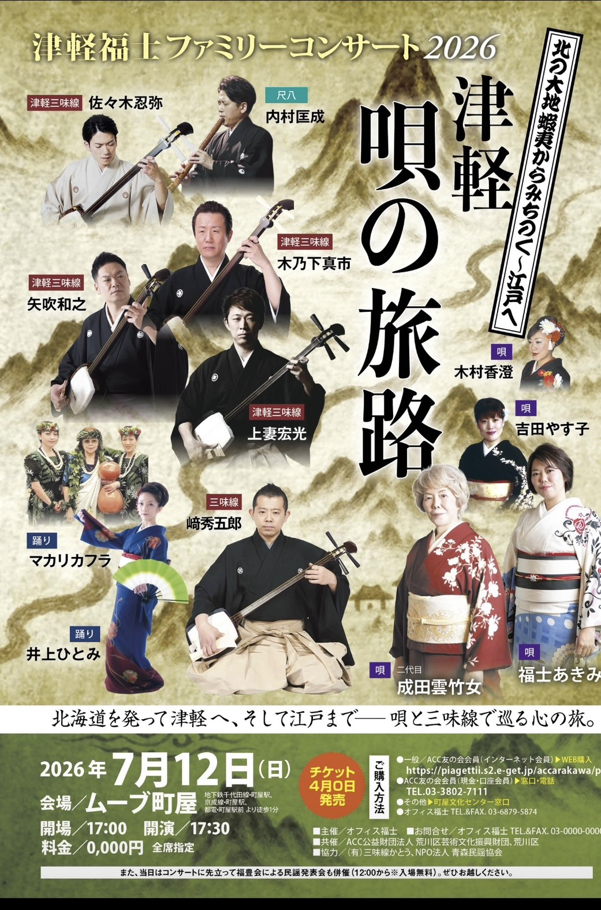
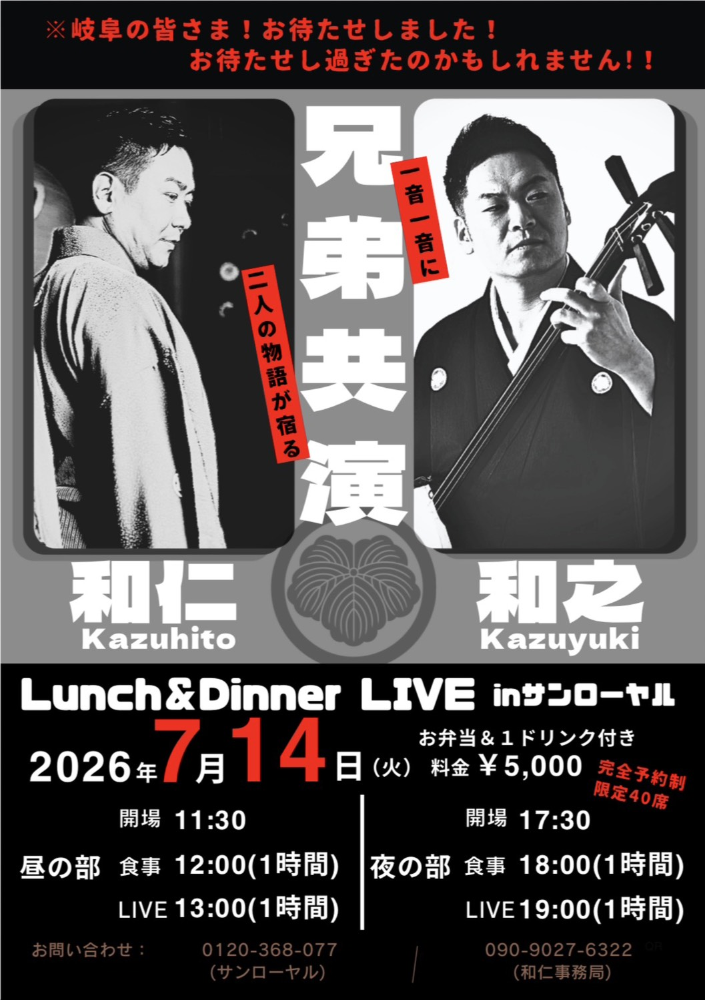
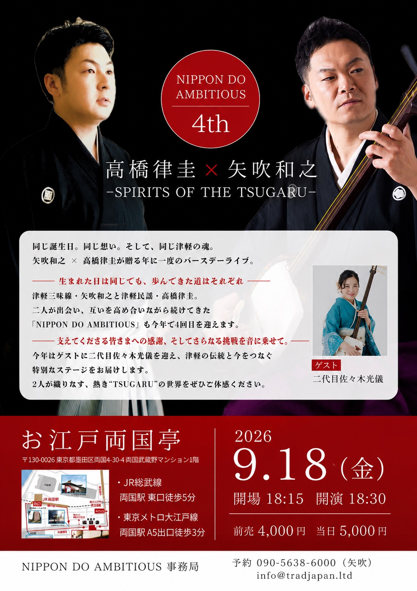

【事務局よりお知らせ】
このたび矢吹和之が、2025年に引き続き、2026年も尾道観光大使を拝命いたしました。 歴史と文化、そして美しい景観に恵まれた尾道の魅力を、音楽活動を通じて全国へ発信してまいります。 引き続き、尾道市のPRと地域文化の振興に微力ながら努めてまいりますので、今後ともご支援のほどよろしくお願いいたします。 矢吹和之事務局
Kazuyuki Yabuki
公演案内・出演予定
最新の公演予定を掲載していきます。
News
このたび矢吹和之が、2025年に引き続き、2026年も尾道観光大使を拝命いたしました。 歴史と文化、そして美しい景観に恵まれた尾道の魅力を、音楽活動を通じて全国へ発信してまいります。 引き続き、尾道市のPRと地域文化の振興に微力ながら努めてまいりますので、今後ともご支援のほどよろしくお願いいたします。 矢吹和之事務局
先日、兵庫県香美町で行われたNHKラジオ第一「民謡をたずねて」の公開収録に、矢吹和之が津軽三味線伴奏として出演いたしました。
香美町の皆さまの温かいご声援の中で収録された放送です。
ぜひお聴きいただけましたら幸いです。
■放送日時
6月23日（火）11:25～11:50
6月30日（火）11:25～11:50
7月7日（火）11:25～11:50
■NHKラジオ第一
「民謡をたずねて」
どうぞお楽しみに♪
NHKラジオ第一「民謡をたずねて」放送予定を見る
Pickup
2026年7月12日（日）

会場：ムーブ町屋
開場 17:00開演 17:30
詳細を見る7月14日（火）

昼・夜の2公演
完全予約制 各回40席限定
詳細を見る2026年9月18日（金）

会場：お江戸両国亭
開場 18:15 / 開演 18:30
詳細を見る